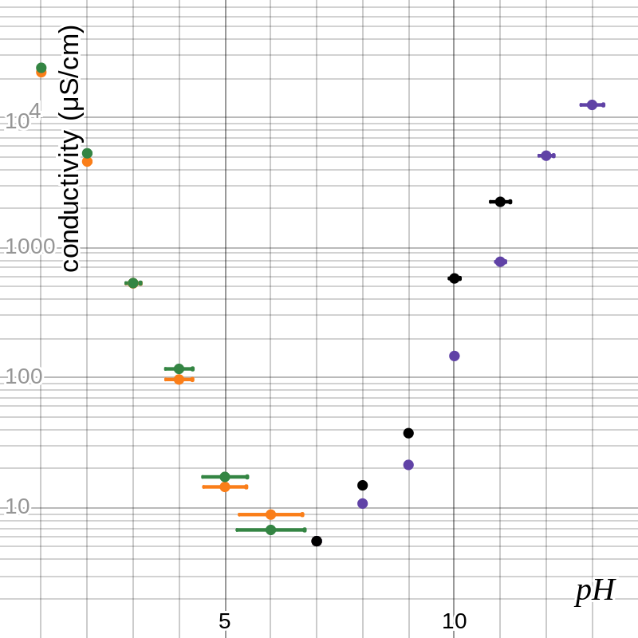

Every aqueous solution of an acid or base is in equilibrium: units of acid dissociate into the conjugate base and hydrogen ions, while units of base join with hydrogen ions in the water to form the conjugate acid and hydroxide ions. The equilibrium constants for these reactions are called the acid and base dissociation constants, and .[1] Water does this on its own, acting as both an acid and a base simultaneously, and the equilibrium constant is known as the ion product of water . For pure water at 25°C, each of these factors is about 1 × 10–7, so 1 × 10–14.[2]
A strong acid dissociates completely or very nearly completely, producing a lot of H⁺ ions, while a weak acid mostly stays associated, with only a (relatively) small number of free H⁺ ions forming. Similarly, a strong base creates many OH⁻ ions while a weak base creates relatively few. The pH scale arranges all this in a single spectrum, with the weak ends converging to neutrality. It is defined as , so pure water, which is neutral, has a pH of 7, while lower numbers are stronger acids and higher numbers are stronger bases.[2] Similar systems were derived from this for and ; for both, lower numbers correspond to greater presence of ions in the solution and thus stronger acids and bases, respectively.[1]
Conductivity is a measure of the ease with which current flows through a substance, the opposite of resistivity. Ions are species that carry an electrical charge, so they should more easily carry current than neutral atoms. This means that solutions with stronger pH values—i.e., further from 7—should be more conductive than solutions closer to neutral. In this investigation, I seek to quantify this effect: how does pH affect conductivity, and how does this differ among monoprotic and diprotic acid and base solutions?
In theory, due to the relationship of concentrations given by the equations for Ka and Kb, it should be possible to precisely determine the concentration of a solution that will produce a given pH. I used literature data and quadratic regression to find the values in table 1. The top part of the Na2CO3 column is missing because the data I used implied that a sodium carbonate solution cannot have a pH above about 11.5.
table 1: pH to concentration conversions (in mol/L)[3]
| pH | HCl | H2SO4 | pH | NaOH | Na2CO3 |
|---|---|---|---|---|---|
| 1 | 1.21 × 10–1 | 1.03 × 10–1 | 13 | 1.36 × 10–1 | -- |
| 2 | 1.10 × 10–2 | 7.09 × 10–3 | 12 | 1.13 × 10–2 | -- |
| 3 | 1.02 × 10–3 | 5.25 × 10–4 | 11 | 1.05 × 10–3 | 1.21 × 10–2 |
| 4 | 9.77 × 10–5 | 4.14 × 10–5 | 10 | 1.07 × 10–4 | 1.36 × 10–4 |
| 5 | 9.55 × 10–6 | 3.47 × 10–6 | 9 | 1.19 × 10–5 | 6.88 × 10–6 |
| 6 | 9.55 × 10–7 | 3.07 × 10–7 | 8 | 1.42 × 10–6 | 6.24 × 10–7 |
The independent variable is pH, as defined in table 1, with a monoprotic and diprotic acid and base each being considered individually. The dependent variable is conductivity, as measured by a conductivity probe in μS/cm. Factors kept constant include the temperature and pressure of the system, the identity of the substance representing each class, and the point at which conductivity is measured.
Materials:
distilled water
HCl(aq) solution, 1.0 M
NaOH(s)
crystals
H2SO4(aq) solution, 1.0 M
Na2CO3(s) powder
graduated cylinder, 100 mL (uncertainty ± 0.5 mL)
graduated pipette, 10 mL (uncertainty ± 0.05
mL)
digital mass balance (uncertainty ± 0.01 g)
conductivity probe (set to 3sf precision)
8
beakers, 150 mL (or similar size)
metal scoop
foil dish
glass stir rod
Table 2 shows the data collected in the experiment.
table 2: conductivity data (in μS/cm ± 1%[5])
| pH | HCl | H2SO4 | pH | NaOH | Na2CO3 |
|---|---|---|---|---|---|
| 1 | 2.34 × 104 | 2.41 × 104 | 13 | 1.25 × 104 | -- |
| 2 | 4.59 × 103 | 5.31 × 103 | 12 | 5.09 × 103 | -- |
| 3 | 5.32 × 102 | 5.34 × 102 | 11 | 7.79 × 102 | 2.25 × 103 |
| 4 | 9.70 × 101 | 1.17 × 102 | 10 | 1.47 × 102 | 5.80 × 102 |
| 5 | 1.45 × 101 | 1.73 × 101 | 9 | 2.14 × 101 | 3.75 × 102 |
| 6 | 8.88 × 100 | 6.77 × 100 | 8 | 1.08 × 101 | 1.49 × 101 |
| 7 | 5.55 × 100 | 5.55 × 100 | 7 | 5.55 × 100 | 5.55 × 100 |
Because the pH of the solutions was determined by mathematical calculation, the uncertainty is different for each value and solution. Table 3 shows the uncertainty in the pH for each of the twenty-two trials.
table 3: pH uncertainties
| pH | HCl | H2SO4 | pH | NaOH | Na2CO3 |
|---|---|---|---|---|---|
| 1.0 | ± 0.018 | ± 0.017 | 13.0 | ± 0.016 | -- |
| 2.0 | ± 0.071 | ± 0.069 | 12.0 | ± 0.039 | -- |
| 3.0 | ± 0.16 | ± 0.16 | 11.0 | ± 0.069 | ± 0.014 |
| 4.0 | ± 0.29 | ± 0.30 | 10.0 | ± 0.11 | ± 0.055 |
| 5.0 | ± 0.47 | ± 0.49 | 9.0 | ± 0.16 | ± 0.12 |
| 6.0 | ± 0.69 | ± 0.74 | 8.0 | ± 0.25 | ± 0.22 |
These values are found by rather complicated means. For example, the pH 1 solution of H2SO4 is created by adding 5.0 mL of 1.0 M H2SO4 to about 44 mL water. The pipette is precise to 0.1 mL, so the uncertainty in the 5 mL measurement is ± 0.05 mL or ± 1%; the graduated cylinder is precise to 1 mL, so the uncertainty in the 44 mL measurement is ± 0.5 mL or about ± 1.1%. The formula to calculate the new concentration involves only multiplication and division (and also includes the concentration of the H2SO4 solution, which is assumed to have no uncertainty), so we can add the percent uncertainties to conclude that the concentration of the new solution has an uncertainty of ± 2.1%. The ± 0.017 in table 3 is then created through a quadratic equation involving logarithms—the formula that relates concentration to pH. The other values, carrying on down the column, arise the same way, but the concentration of the previous solution is now relevant, so the uncertainty compounds (for simplicity, I have assumed that the addition each time is 2%, though in fact it fluctuates slightly). The same process applies to the other three columns, leading to the table above.
Figure 1 shows the data in graphical form—orange for HCl, green for H2SO4, purple for NaOH, and black for Na2CO3. Conductivity is projected logarithmically in order to display the data logically, but pH already accounts for its exponential nature. Note that the point at (7, 5.55) is shared by all four series. Figure 2 shows the best-fit curves for these data sets as determined by Desmos’s logarithmic regression; on a linear-logarithmic plot, the exponential functions appear to have linear graphs.
figure 1: conductivity vs. pH for four solutions
figure 2: graph of data with best-fit lines
Each of these curves is described by an equation of the form , where σ is conductivity in μS/cm, h is pH, and a and b are constants. Though this is possible for all four substances, in order to compare the equations to each other, it is helpful to modify those for the bases by replacing h with . The results of this are shown in table 4.
table 4: regression equations for best-fit curves
| HCl | σ = 58 700 × 0.231h | NaOH | σ = 50 700 × 0.248(14–h) |
| H2SO4 | σ = 69 800 × 0.224h | Na2CO3 | σ = 211 000 × 0.209(14–h) |
The question arises: what do these constants mean? Based on the nature of an exponential function, a is the value of σ at the 0 point, which is 0 for the acids but 14 for the bases, and so must be in μS/cm; b is the “slope,” the ratio by which σ changes for every step h takes toward neutral 7, and is dimensionless. A min-max gradient analysis finds the uncertainties in this slope by measuring how far it could change while staying within the uncertainty boxes, producing the values in table 5.
table 5: uncertainties for regression values
| HCl | b = 0.23 ± 0.04 | NaOH | b = 0.25 ± 0.01 |
| H2SO4 | b = 0.22 ± 0.04 | Na2CO3 | b = 0.21 ± 0.03 |
In order to compare these numbers to literature results, the equation above must be rearranged from to , where H is the concentration of H⁺ ions and . For the bases, the in the exponent means that there is an additional coefficient of b14 in this new equation, and c is a positive logarithm. The resulting equations are shown in table 6.
table 6: equations with concentration as base of exponent
| HCl | σ = 58 700 × H (0.64 ± 0.08) | NaOH | σ = 50 700 × H (–0.60 ± 0.02) × (0.25 ± 0.01)14 |
| H2SO4 | σ = 69 800 × H (0.66 ± 0.09) | Na2CO3 | σ = 211 000 × H (–0.68 ± 0.07) × (0.21 ± 0.03)14 |
There is now a number to compare to external sources: according to one source, the conductivity of a solution is proportional to the square root of the concentration of ions, which would make the exponent 0.5.[6] This means that the percent error in the experiment is between 20% and 36% for the different substances. Many sources, however, simply indicate that the exponent should be positive for acids and negative for bases, which is what the experiment found.
There is a straightforward answer to the research question: less neutral pH—further from 7—corresponds to greater conductivity, on an exponential scale. However, this does not account for any differences between acids and bases or between different sorts of these. The exponents on [H⁺] in table 6 imply that some species have a stronger correlation between pH and conductivity than others, with sodium hydroxide having the least and sodium carbonate having the most, but the uncertainty in these values means that no significant conclusions can be drawn in any direction.
In theory, though, a distinction should exist: ChemPRIME provides that Na2CO3 should be slightly more conductive than NaOH, and HCl much more conductive than either base.[7] (It does not give a value for H2SO4, but educated extrapolation would place it comparable to NaOH.) Therefore, there must have been something in the experiment that caused all the substances to appear indistinguishably similar. One aspect of this is random error, arising from limited precision with all measuring tools, such as the graduated cylinder and the conductivity probe; this shows up as uncertainty in data, which gets carried forward to all calculated values. The most effective way to reduce this would have been to run more trials and do steps 4, 5, and 6 of the procedure two or three times instead of just once. Then, data would be collected as average values, which will likely be more accurate and have more predictable uncertainty (rather than the complicated calculations for pH that I had to do). Random error could also be reduced with more precise equipment for certain measurements—for example, measuring quantities of distilled water to within 0.1 mL, instead of to 1 mL, as the graduated cylinder allows, and then just guessing at more precise amounts—although this could be limited by the precision of other equipment, such as the conductivity probe, of which my lab only has one kind.
Another possible source of the discrepancy is systematic error—forces that cause the results to be skewed in a particular direction overall. It would seem that this is present, given that the four percent errors are all in the same direction. One of these, for example, could be that, because I did not rinse the conductivity probe after every reading, it may have been contaminated with solution more concentrated than the one I was trying to measure at any given point. This would mean that the majority of my data points are slightly higher than they should have been, and the final exponents are also elevated. Systematic error could also have been induced by the entry of substances caked onto the beakers or in the tap water I used to rinse them out into the solutions I was measuring. This would almost certainly have introduced more ions into the solutions, meaning higher measured conductivity and thus higher values for the exponents in table 6. If both of these factors were corrected for, it might put those values within the range of uncertainty for the literature value. I could also have reduced these effects, potentially, by recognizing them before or during the experiment and acting accordingly—in these examples, by rinsing the conductivity probe between all trials, cleaning out the beakers carefully before starting, and using distilled water to rinse the beakers instead of tap water.
Another major weakness of this investigation arises from the way I used pH. The values in table 1 were calculated based on only three sample points for each solution, which inevitably had some flaws: it is, in fact, possible to obtain a solution of sodium carbonate above pH 12, but the “literature values” implied the opposite. The complicated relationship between concentration of an acid or base and the pH of the solution meant that I struggled to determine it algebraically, not relying on extrapolation from a small sample size, but this led to my definition of pH being a measurement that is not exactly the actual pH. A simple way to improve this experiment might have been to utilize the pH probes that my lab has, which would eliminate these issues with pH values. I initially thought it would be easier to run the experiment if I could have a number to aim for without guessing-and-checking in the moment, but I do not think it made for a better investigation, though I cannot be sure exactly how much this impacted my results. Attempting to test four different substances in one experiment rather than just one may have also had a detrimental effect on this investigation, but I believe its largest impact was on time and not quality.
For all the above shortcomings in this experiment, it appears to have been mostly successful on the whole. Despite some surprising data and quite large uncertainties for some values, the final numbers came quite close to their expected values, especially given the range of information that I was able to find as “literature values.” (I also do not believe that percent error does justice for exponents as opposed to dimensional quantities.) This investigation could be extended with similar research into other acids and bases and where they fit into the puzzle to attempt to more fully answer the initial question, as well as triprotic acids and bases in order to extend the pattern that is discovered. The effect of temperature on both pH and conductivity could also be explored to explain yet more aspects of this paradigm.
Chemistry is a complex discipline. In seeking to explain all matter at a fundamental level, it constructs many principles for the workings of its systems, which have substantial overlap as they can describe the same systems in different ways. The pH scale is one way of thinking about the strength of a caustic solution, simplifying exponential growth to a linear scale that we can more easily comprehend. Considering the equilibrium reaction(s) occurring in such a solution provides another perspective on it, rooted more in the variety of species involved than the significance of one specifically. Conductivity is a property that can also describe such a system, approaching it from a viewpoint more linked to physics than the others are. With all of these ideas together, I can form a clearer picture of the true nature of the system and analyze it as I have in this paper.
Indeed, it is this multiplicity of paradigms that makes chemistry useful, and also that makes it difficult. Chemistry classes often divide the field into separate buckets—stoichiometry, redox, acids/bases, kinetics, and so on—because it is easier for students to learn one thing at a time, but inevitably parts of these show up in others in order to paint a reasonably complete picture of chemistry as a whole. Describing the discipline only by thinking about these divisions misses the nuances; its true nature can only be captured by always keeping the big picture in mind. This applies beyond chemistry as any pursuit can be viewed from many angles and at many levels. Missing the forest for the trees always means that something is going unnoticed, but it is easy to forget—or not to know—how big the forest really is. Only by taking a step back are we able to see all the good things in life.
a b 1. Chem 400: General Chemistry I, §16.4 “Acid Strength and the Acid Dissociation Constant (Ka),” chem.libretexts.org
a b 2. Chem 400: General Chemistry I, §16.5 “Autoionization of Water and pH,” chem.libretexts.org
↑ 3. “pH of Common Acids and
Bases,” Aqion,
aqion.de/
↑ 4. See, for instance,
endmemo.com/
↑ 5. “Go Direct Conductivity Probe
User Manual,” vernier.com/
↑ 6. Jack Brubaker, “Conductivity
vs. Concentration,”
sciencing.com/
↑ 7. ChemPRIME, §11.2 “Ions in Solution (Electrolytes),” chem.libretexts.org